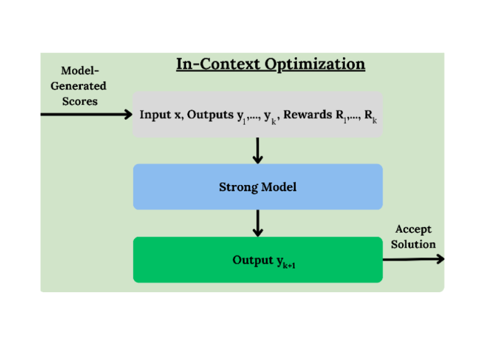

|
Alok Shah
I'm a student at University of Pennsylvania where I study Computer Science (B.S.E), Mathematics (B.A.), and Electrical Engineering (M.S.E) with a focus on Optimization and Control.
Outside of class I lead MLR@Penn, the undergraduate AI and ML research organization and community at Penn and serve on the Student Advisory Board for the Wharton AI & Analytics Initiative.
In my free time, I enjoy history and geography trivia, traveling, trying new food trucks and restaurants around Philly, and burning off those calories by playing pickup soccer.
I'm open to collaborations or talking about anything related to ML and research -- I especially enjoy mentoring younger students interested in getting involved in the field!
Email /
CV /
Twitter /
Github
|
|
Research
I'm broadly interested in playing simple tricks on models to improve empirical and theoretical bounds alike on performance across modalities. Currently, I'm developing methods to induce more robust, explainable, and generalizable reasoning capabilities in generative models while ensuring their responsible use in practice.
|
|
|
Investigating Language Model Dynamics using Meta-Tokens
Alok Shah,
Keshav Ramji,
Khush Gupta,
Vedant Gaur
NeurIPS ATTRIB, 2024
Explored how to coerce communication between token-level checkpoints for more interpretable, capable models
|
|

|
Weak-to-Strong In-Context Optimization of Language Model Reasoning
Keshav Ramji,
Alok Shah,
Vedant Gaur,
Khush Gupta
NeurIPS ATTRIB, 2024
Developed in-context optimization method leveraging weak learners to improve reasoning in strong large language models without additional finetuning
|
|
|
Conformal Q-Learning: Distriution-Free Uncertainty Quantification for Offline RL
Alok Shah, Nikhil Kumar, Mohul Aggarwal, Arjun Arasappan, Vadim Popov
Integrating conformal prediction into offline reinforcement learning, providing statistically robust uncertainty quantification while addressing overestimation bias in Q-value functions
|
|
|
Deep Compression with Adversarial Robustness via Decision Boundary Smoothing
Alok Shah, Michael Shao
ESE 5390 Final Project: A unified framework for model compression and adversarial robustness by exploiting the geometry of class boundaries
|
|
|
AlfLLM: Limitations on LLMs as Reward Function Surrogates
Alexander Kyimpopkin, Alok Shah, Dominic Olaguera-Delogu
Investigated the efficacy of using large language models as surrogate reward functions for reinforcement learning in the ALFWorld environment.
|
|
Selected Coursework
I've had the privilege of learning from excellent professors, each of whom has influenced my approach to research.
* denotes graduate level; ** denotes doctoral level
- Honors Multivariate Analysis (Herman Gluck)
- Discrete Mathematics (Rajiv Gandhi)
- Data Structures and Algorithms (Rajiv Gandhi)
- Advanced Linear Algebra* (Julia Hartmann)
- Probability* (Michael Carchidi)
- Computer Systems (Benjamin Lee)
- Machine Learning* (Jake Gardner)
- Real Analysis (John Green)
- Topology* (Dennis DeTurck)
- Differential Geometry* (Dennis DeTurck)
- Operating System and Design (Travis McGaha)
- Ethical Algorithm Design* (Michael Kearns)
- Convex Optimization** (Nikolai Matni)
- State Estimation, Control, and Reinforcement Learning** (Pratik Chaudhari)
- Deep Learning* (Pratik Chaudhari)
- Theoretical Computer Science (Anindya De)
- Analysis of Algorithms* (Sanjeev Khanna)
- Uncertainty Quantification** (Aaron Roth)
- Learning for Dynamics and Control** (Ingvar Ziemann)
- Hardware/Software Co-Design for Machine Learning* (Jing Li)
- Stability in Optimization and Statistics** (Jason Altschuler)
- Bayesian Optimization** (Jake Gardner)
- Randomized Algorithms and Numerical Linear Algebra** (Erik Waingarten)
- Numerical Optimization for Data Science and Machine Learning (Damek Davis)
- Statistical Topics in Large Language Models** (Weiji Su)
|
Teaching
I've served as Teaching Assistant for multiple core ML courses at Penn
* denotes graduate level; ^ denotes head teaching assistant
- Mathematics of Machine Learning (Eric Wong)
- Machine Learning*^ (Surbhi Goel, Eric Wong, Jake Gardner)
- State Estimation, Control, and Reinforcement Learning** (Pratik Chaudhari)
- Convex Optimization** (Nikolai Matni)
|
{kind=link}